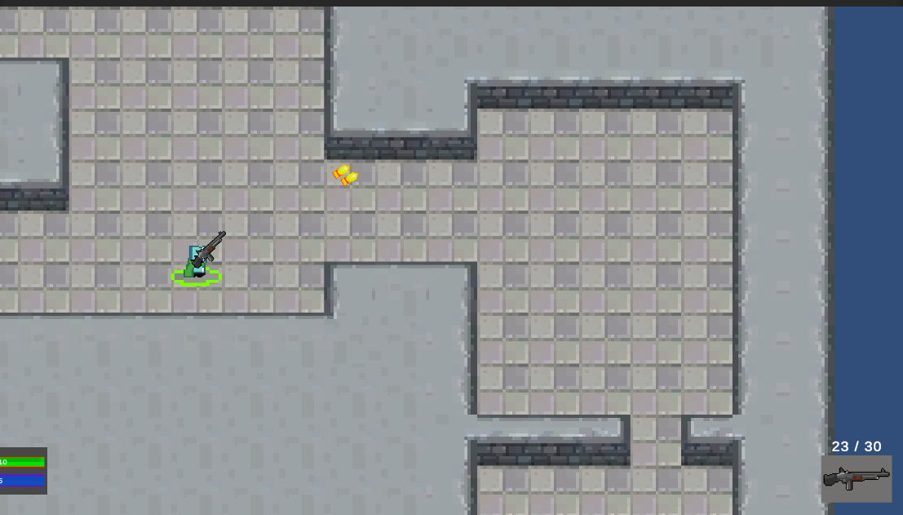

Biography

Xiamen University Malaysia,
Jalan Sunsuria,
Bandar Sunsuria,
43500 Sepang,
Selangor Darul Ehsan,
Malaysia
Phone: +60168609059
Email: swe2002109@xmu.edu.my
Github: oyj623
LinkedIn: oyj
Xiamen University Malaysia,
Jalan Sunsuria,
Bandar Sunsuria,
43500 Sepang,
Selangor Darul Ehsan,
Malaysia
Phone: +60168609059
Email: swe2002109@xmu.edu.my
Github: oyj623
LinkedIn: oyj
Greetings, I am Ong Yi Jun. I am a person who prioritize mental satisfaction more than physical world fulfillment. Therefore, the feeling of achievement after solving a problem is my power source. This is also the reason why I love math and programming. Furthermore, my MBTI personality type is INTJ-A. I am introverted, which means I would rather spend time doing things I like than socializing with people I don't know. However, it doesn't mean I don't want to work with other people. It might take some time for me to familiarize with my future colleagues, but I can communicate with them effectively after I get to know them well. I am also a judging person, which means I am decisive, thorough and highly organized in my work, planning and decision-making. My personality test result also suggests that I "think" more than I "feel", meaning that I prioritize logic over emotions. I focus on objectivity and rationality, and see efficiency more important than my feelings. This makes me suitable for software developments or data analysis job. I tend to be more intuitive in the fields that I am good in. However, I will be observant in fields that I am not confident in. Lastly, I am an assertive person. I am self-assured, even-tempered and resistant to stress.
| No. | Subjects | Grade |
|---|---|---|
| 1 | Introduction to Linear Algebra | 4.0 |
| 2 | Operations Research | 3.7 |
| 3 | C and C++ programming | 4.0 |
| 4 | Computer Fundamentals | 3.3 |
| 5 | Computing Mathematics | 4.0 |
| 6 | Principles of Information Systems | 3.0 |
| 7 | Computer Architecture | 4.0 |
| 8 | Data Structure | 4.0 |
| 9 | Fundamentals of Network Technology | 4.0 |
| 10 | Introduction to Software Engineering | 3.0 |
| 11 | Introduction to Advanced Mathematics I | 4.0 |
| 12 | Algorithm Analysis and Design | 3.3 |
| 13 | Database | 3.0 |
| 14 | Operating Systems | 3.7 |
| 15 | Principles of Artificial Intelligence | 4.0 |
| 16 | Software Architecture and Design Patterns | 2.7 |
| 17 | Computer Graphics | 2.7 |
| 18 | Human Computer Interaction | 3.0 |
| 19 | Object Oriented Modelling | 3.3 |
| 20 | Software Quality Engineering | 3.0 |
| 21 | Introduction to FinTech | 3.3 |
| 22 | Introduction to Finance | 4.0 |
| 23 | Mathematical Graphics | 4.0 |
| 24 | Digital Media Technology | 3.7 |
| 25 | Embedded System | 2.3 |
| 26 | Game Design and Development | 3.7 |
| 27 | Programming Elective II (1) | 4.0 |
| 28 | Software Verification and Validation | 3.3 |
My team and I coded the program using C++.
We implemented minimax algorithm with alpha-beta pruning.
My team and I designed the architecture of the software by using ArchiMate.

I designed the game using Unity and coded the game using C#.
My team and I designed the frontend using HTML and CSS, and programmed the backend using Java Hibernate Framework.